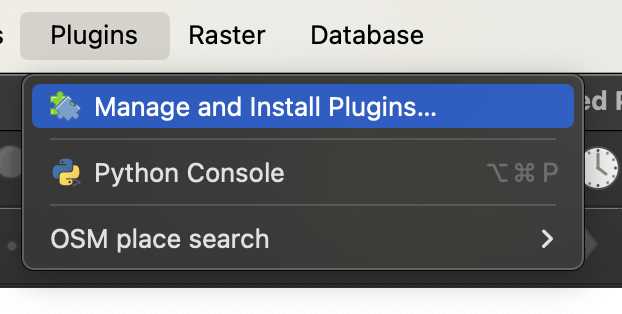
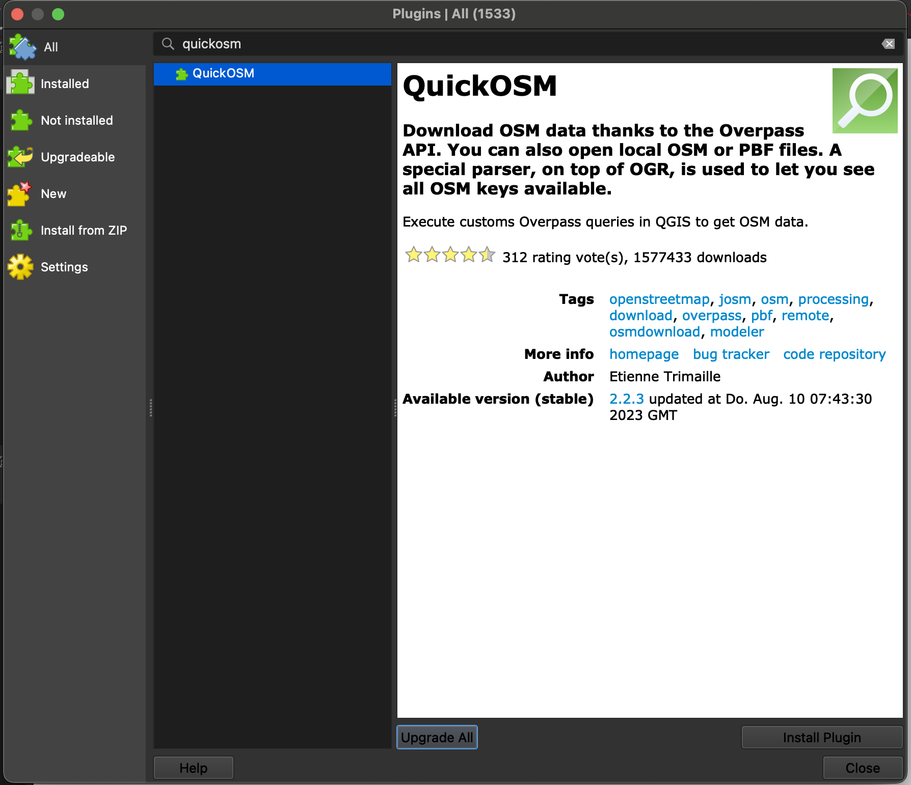

Plugins#
There are numerous extensions for QGIS, also called plugins, which provide extended functionalities. Usually, if you have a specific task and QGIS does not have the right functionality, look for a plugin. You google or search in the plugin window.
Plugins in QGIS are useful additional tools you can use to make some tasks easier. Plugins are written by QGIS developers and other independent users who want to extend the core functionality of the software. These plugins are made available in QGIS for all the users for free. Once installed, plugins remain available in QGIS.
Note
You don’t have to reinstall plugins for every new project.
Installation of plugins#
To install a plugin Plugins -> Manage and Install Plugins… -> All -> Search for the plugin -> Install Plugin
Tip
If you cannot find a specific extension, check your capitalisation and correct use of spaces. If you still cannot find an extension, you may need to allow the experimental extensions in the options (see below).
Manage Plugins#
If you are currently not using installed plugins it might be useful to deactivate these plugins to avoid crowded toolbars and to reduce open panels.
Allow experimental extensions#
Experimental extensions are either still under development, or they are obsolete extensions that are no longer further optimised/adapted for the newer versions of QGIS. Nevertheless, the use of experimental extensions can be useful:
Specific functions are not supported in any other extension.
Alternative if there are problems with another extension.
A tutorial makes use of a specific extension.
Tip
Due to the often missing optimization for the used QGIS version, experimental extensions may cause more error messages or other problems up to a crash of QGIS. Experimental extensions should therefore only be activated for use and then deactivated again. In addition, make sure that the current working progress is saved to avoid data loss when QGIS crashes.
Downloading the Quick OSM plugin#
To download data from data and import it into your QGIS the plugin QuickOSM is great. First you need to install it by searching for it in the Manage and Install Plugins Tab.
How to download the plugin
{kind=link}

Manage and Install Plugins.#
{kind=link}

Installing QuickOSM.#
To launch the newly installed plugin, click on  or click under
or click under vector -> QuickOSM.
Follow the steps to fetch for data:
Select a Key and Value from the dropdown list. If you are unsure, check here: taginfo.openstreetmap.org.

Choosing key and value in QuickOSM.#
Limit the area by typing in the name of your area of interest.
Unfold the tab
Advanced. Only select the datatypes you are expecting to minimize errors.

Running the QuickOSM plugin.#
Click on
Run query.
How to fetch data for multiple queries
If you want to get more data in the same area, you can add a query by clicking on the  . Be careful choosing the right logical operator
. Be careful choosing the right logical operator And or Or. If you are unsure check this Wikipage.